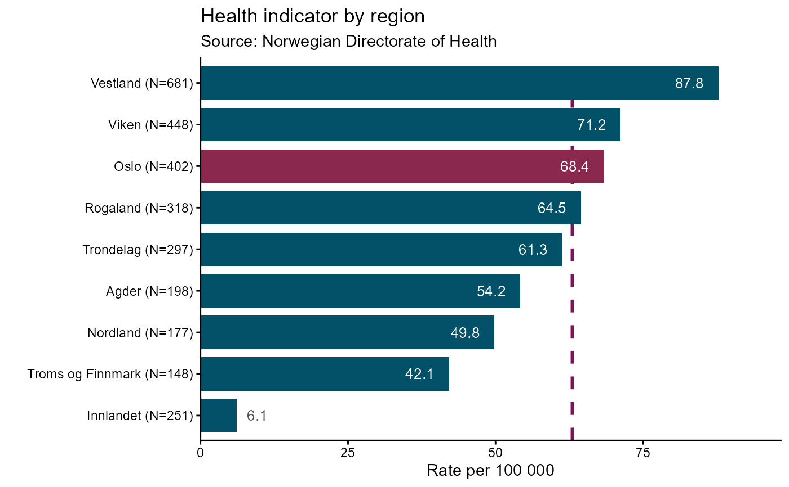

Draws a ranked bar chart with smart label placement and optional comparison highlighting. Bars are sorted by value, and labels are placed inside or outside the bar depending on available space. A single category can be highlighted with a contrasting fill colour, and an optional horizontal line can be added to indicate a target or benchmark value.
Usage
hd_geom_ranked_bar(
ascending = TRUE,
vs = NULL,
aim = NULL,
char_scale = 0.045,
min_frac = 0.08,
...
)Arguments
- ascending
Logical. If
TRUE(default) bars are sorted in ascending order ofy.- vs
Character string (partial match) identifying one category to highlight with a contrasting fill colour. If omitted all bars use the same colour.
- aim
Numeric. Optional horizontal line indicating a target or benchmark value. If
NULL(default) no line is drawn.- char_scale
Numeric scaling factor that converts label character-count into axis-range units. Controls how generously space is estimated for each character. Defaults to
0.045; increase (e.g.0.060.06) for larger text sizes, decrease (e.g.0.03) for smaller ones.- min_frac
Numeric. Minimum fraction of the axis range that a bar must span before its label is considered to fit inside. Acts as a safety floor for very short labels. Defaults to
0.08(8%).- ...
Geometry-specific arguments forwarded to
hd_make().
Examples
# Regional health indicator dataset
regions <- data.frame(
region = c("Oslo", "Viken", "Vestland", "Rogaland",
"Trondelag", "Innlandet", "Agder",
"Nordland", "Troms og Finnmark"),
rate = c(68.4, 71.2, 87.8, 10.5, 61.3, 6.1, 54.2, 49.8, 42.1),
n = c(402, 448, 681, 318, 297, 251, 198, 177, 148)
)
# Declarative API ----
spec_rb <- hd_spec(regions,
x = "region",
y = "rate",
n = "n")
opts_rb <- hd_opts(
title = "Health indicator by region",
subtitle = "Source: Norwegian Directorate of Health",
ylab = "Rate per 100 000",
flip = TRUE
)
hd_make(spec_rb, "ranked_bar", opts_rb, vs = "Oslo", aim = 63)
# Layered API ----
hd(regions, x = "region", y = "rate", n = "n", backend = "ggplot2") +
hd_geom_ranked_bar(
ascending = TRUE,
vs = "Oslo",
aim = 63,
char_scale = 0.045,
min_frac = 0.08) +
hd_opts(
title = "Health indicator by region",
subtitle = "Source: Norwegian Directorate of Health",
ylab = "Rate per 100 000",
flip = TRUE
)
